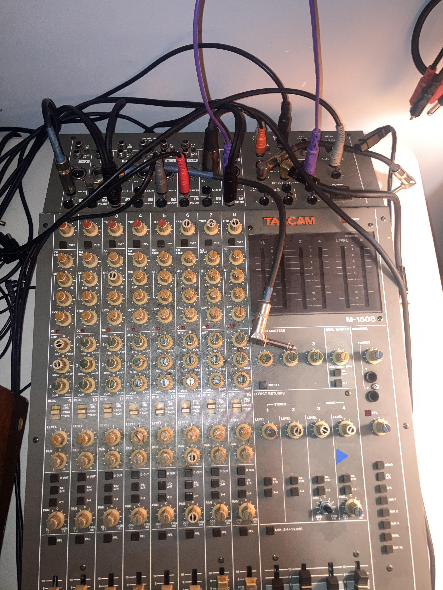

https://somepepper.bandcamp.com/
some pepper is daby's long standing recording and live noise umbrella,
centered around feedback and autogenic sound. creative routing
and finding the sweet spots to recreate life.
now with more radio!

